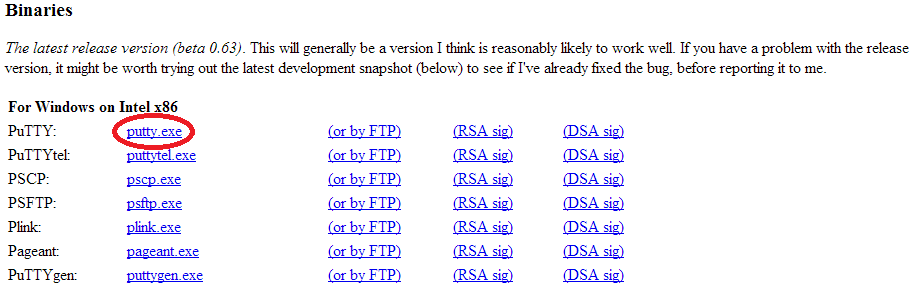
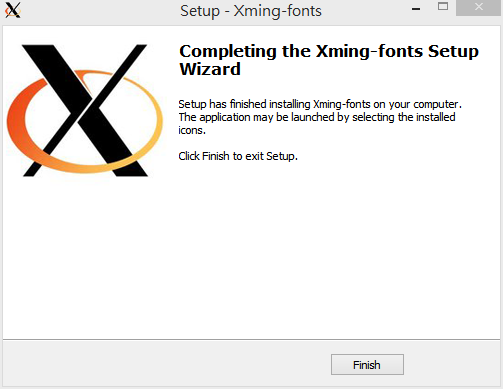

遠端連線與上傳檔案至 Server
Login Server From Home
Using Linux Terminal
- ssh 連線, ssh 帳號@IP -p(小寫) ssh_port
- scp 上傳檔案, scp -P(大寫) ssh_port 檔案名稱 帳號@IP:目的地
Terminal Emulator
下載
PuTTY

Xwindow Server
從網路下載及安裝 Xming X Server.
- 下載 Xming 主程式及字型
- 安裝主程式 Xming-6-9-0-31-setup

- 安裝字型 Xming-fonts-7-5-0-70-setup

建立連線及設定
Xming 已經啟動, 開啟 Putty
傳遞檔案
- 開始安裝

- 設定與連線
ChiSheng Su